充气式约束模块的处理和报废
- • EL-38826辅助充气式约束系统展开线束
- • EL-39401-B辅助充气式约束系统展开夹具
专用工具
有关当地同等工具的信息，参见专用工具。
有效且未展开的安全气囊
处理或存放未展开的安全气囊时应特别小心。安全气囊展开会迅速产生气体。在意外展开的情况下，产生的气体可能会使安全气囊或安全气囊前的物体弹射出去。
报废程序
在车辆的有效寿命期间，可能会出现需要处理有效的未展开气囊的一些情况。在安全气囊展开前，不要用常规的报废处理方法处理有效且未展开的安全气囊。
不要在以下情况下展开安全气囊：
- • 在保修期内更换安全气囊后－可能需要将未展开的安全气囊返回给生产商。
- • 如果车辆在辅助充气式约束系统方面发生产品可靠性索赔，并接受初步调查－请勿以任何方式改变辅助充气式约束系统。
- • 如果车辆参与的事件对安全气囊造成了影响－则按照事件维修通告中的说明执行正确的辅助充气式约束装置处理程序。
展开程序
注意:一些国家、州或地区可能不允许在未经特许或培训的情况下维修展开安全气囊。必须遵守当地法律有关带烟火装置的安全气囊/装置的展开和报废规定。
可以在车内或车外展开安全气囊。所使用的方法取决于对车辆的最终处置方式。参照以下程序，确定在特定情况下哪一种方法最合适：
车外展开－方向盘安全气囊、仪表板安全气囊和车顶纵梁安全气囊
当车辆要返修时，应在车外对安全气囊进行展开处理。以下情况需要在车外展开：
- • 执行辅助充气式约束系统诊断时，发现安全气囊有故障。
- • 安全气囊表面损坏、刮伤或者开裂。
- • 安全气囊引线损坏。
- • 安全气囊连接器损坏。
- • 安全气囊连接器端子损坏。
对有故障的安全气囊进行展开和处理时，要满足零件保留期限要求。
警告：参见有关辅助充气式约束系统充气装置模块报废的警告。
- 1.关闭点火开关。
- 2.拆下安全气囊。
-
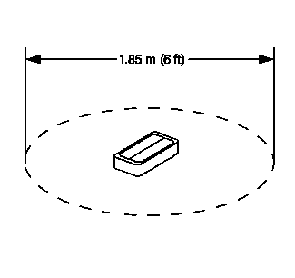3.清理出一块直径约为1.85 米（6 英尺）的空地，供安全气囊或展开夹具展开。如果可能，使用铺装地面的户外空地。否则，使用车间的空闲区域。确保通风良好。
- 4.清理区域内的杂物或易燃品。
-
5.如果正在展开方向盘安全气囊，则将安全气囊置于空地的中央，使塑料装饰盖面朝上并远离表面。注意:双级展开系统仅用于方向盘和仪表板安全气囊。双级安全气囊以 1级方式展开后，2 级展开功能可能仍然有效。如果需要处置双级安全气囊，则必须将两个展开回路均通电来展开气囊。
-
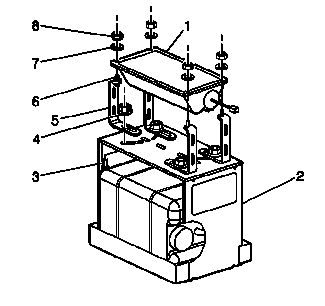6.展开仪表板安全气囊时，执行以下说明：
- 6.1 将EL-39401-B夹具置于清理区域的中央。
- 6.2 向展开夹具中加入水或沙子。
- 6.3 使用合适的螺母和螺栓，将仪表板安全气囊 (1) 安装到展开夹具 (2) 上，使塑料装饰盖朝上。
- 6.4 牢牢紧固将仪表板安全气囊 (1) 固定到展开夹具 (2) 上的所有紧固件。
-
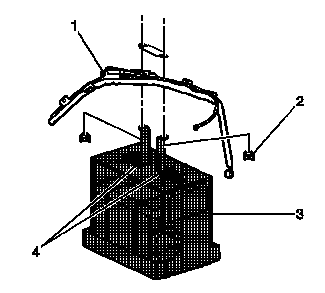7.展开车顶纵梁安全气囊时，执行以下说明：
- 7.1 将EL-39401-B夹具（3）置于清理区域的中央。
- 7.2 向展开夹具中加入水或沙子，以在展开时给夹具提供足够的稳定性。
- 7.3 使用合适的螺母和螺栓，调节夹具臂 (4) 并将其固定到展开夹具 (3) 上。
- 7.4 连接展开夹具中的车顶纵梁安全气囊，并牢固地紧固所有紧固件。
-
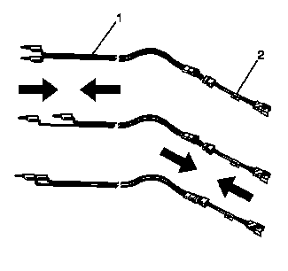8.检查EL-38826线束和相应的引线适配器（2）是否损坏。必要时更换。
- 9.将一个香蕉插头插入另一个插头中，使2 条辅助充气式约束系统展开线束引线 (1) 短接在一起。
- 10.将合适的引线适配器 (2) 连接到辅助充气式约束系统展开线束 (1) 上。
-
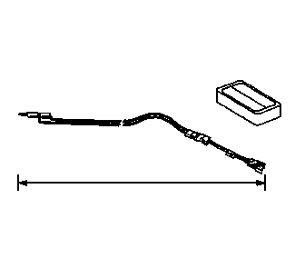11.将辅助充气式约束系统展开线束和适配器从展开夹具或部位中完全拉出。
-
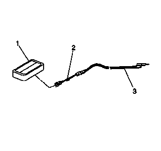12.将安全气囊 (1) 连接到辅助充气式约束系统展开线束 (3) 的适配器 (2) 上。注意:在双级安全气囊上，两个连接器都必须连接到展开线束适配器上。不管展开状态如何，这将保证 1级和 2级展开回路都通电。
-
13.清理在场人员。
- 注意:
- • 展开安全气囊时，气体迅速膨胀发出的声音会非常响亮。通知附近的所有人员，将要展开安全气囊。
- • 当安全气囊展开时，展开夹具会垂直跳起约30 厘米（1 英尺）。这是安全气囊的正常反应，是由安全气囊内气体迅速膨胀所产生的作用力导致的。
- • 如果展开一个 1级已展开的双级安全气囊，则展开夹具可能不会移动，产生的噪声可能也会减小。
-
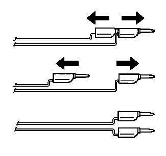14.将之前步骤中短接的辅助充气式约束系统展开线束上的2 个香蕉插头分开。
-
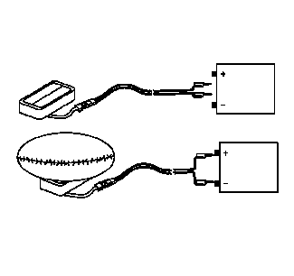15.把最低电压为12 V/最小电流为2A的电源，如车辆蓄电池，放在线束短接端的附近。
- 16.将辅助充气式约束系统的展开线束连接到电源。接触后，安全气囊即会展开。
-
17.在安全气囊展开后，将辅助充气式约束系统的展开线束从电源上断开。

- 18.如果安全气囊没有展开，则断开适配器，中断展开程序，并与技术支持小组联系。如果成功展开，则继续以下步骤。
- 19.将一个香蕉插头插入另一个香蕉插头中，使展开线束的引线短接。
- 20.戴上工作手套。
- 21.将引线适配器尽快地从安全气囊上断开。
- 22.检查软导线适配器和SIR展开线束。必要时更换。
- 23.使用常规的废弃物处理方法处置已展开的安全气囊。
- 24.用温和的肥皂洗手。
车内展开－车辆报废程序
在毁坏车辆或对车辆部件进行回收时，可以在车内展开安全气囊。这包括但不限于以下情况：
- • 车辆已达到最长使用寿命。
- • 在非展开型的故障中，车辆遇到不可修复的损坏。
- • 遭遇偷盗时，车辆受到不可修复的损坏。
- • 车辆报废回收，将其零件用在车辆识别号不同的车辆上，而不是修复车辆识别号相同的车辆。
警告：参见有关辅助充气式约束系统充气模块车外展开的警告。
- 1.降下驾驶员侧和乘客侧车窗。
- 2.将点火开关置于“OFF（关闭）”位置，拔出点火开关钥匙。
- 3.确认所有待展开的安全气囊安装牢固。
- 4.从前排座椅上清除所有杂物。
-
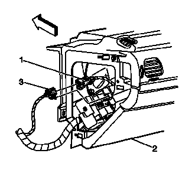5.将方向盘安全气囊黄色连接器 (1) 从车辆线束黄色连接器 (3) 上断开。警告：无论双级充气模块展开时使用了一级还是两级，展开后的双级充气模块看上去都是一样的。因此，请始终假定展开后双级充气模块的二级回路仍有效。如果处理或维修不当，会使充气模块展开，从而造成人身伤害。
-
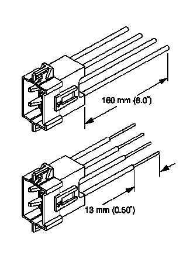6.从车辆上切除黄色线束连接器，在连接器处留下至少16 厘米（6 英寸）的导线。注意:如果车辆装备了双级安全气囊，则方向盘安全气囊和仪表板安全气囊将各有4 条导线。参见部件连接器端视图，确定高压及低压电路。
- 7.从连接器的各引线上剥开13 毫米（0.5 英寸）长的绝缘皮。
-
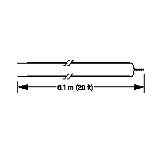8.从 0.8 毫米（18 号）或更粗的多股线上剪下两条 6.1 米（20 英尺）长的展开导线。这些导线将用于制作驾驶员侧展开线束。
- 9.从导线的两端上剥开13 毫米（0.5 英寸）长的绝缘皮。
- 10.将各导线的一端绞合起来，使其短接。展开导线应保持短接状态，直至准备展开安全气囊时才连接到电源。
-
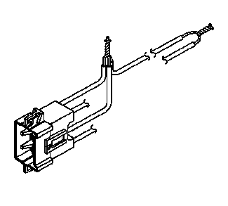11.将2条连接器引线（方向盘安全气囊各级回路中的高电平线路）与一组展开导线拧绞在一起。参见部件连接器端视图，确定正确的电路。
- 12.检查3条导线牢固连接。
- 13.用绝缘胶带将3线接头隔离并固定到展开线束上。
-
14.将2条连接器引线（方向盘安全气囊各级回路中的低电平线路）与一组展开导线拧绞在一起。参见部件连接器端视图，确定正确的电路。

- 15.检查3条导线牢固连接。
- 16.用绝缘胶带将3线接头隔离并固定到展开线束上。
- 17.将展开线束连接至方向盘安全气囊上的连接器。
- 18.将展开线束从车辆的驾驶员侧拉出。
- 19.将左侧车顶纵梁黄色线束连接器从车辆线束连接器上断开。
- 20.从车辆上切除线束连接器，在连接器处留下至少16 厘米（6 英寸）的导线。
- 21.从连接器的各引线上剥开13 毫米（0.5 英寸）长的绝缘皮。
- 22.从 0.8 毫米（18 号）或更粗的多股线上剪下两条 6.1 米（20 英尺）长的展开导线。这些导线将用于制作车顶纵梁安全气囊展开线束。
- 23.从导线的两端上剥开13 毫米（0.5 英寸）长的绝缘皮。
- 24.将各导线的一端绞合起来，使其短接。
- 25.将一条连接器引线与一条展开导线绞合在一起。
- 26.使用绝缘胶带固定和隔离接头。
- 27.将剩下的一条连接器引线与剩下的一条展开导线绞合在一起，并包上绝缘胶带。
- 28.将展开线束连接到车顶纵梁安全气囊黄色连接器上。
- 29.将展开线束从车辆的驾驶员侧拉出。
-
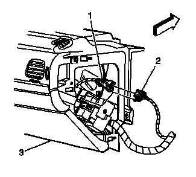30.将仪表板安全气囊黄色线束连接器 (1) 从车辆线束连接器 (2) 上断开。
-
31.从车辆上切除黄色线束连接器，在连接器处留下至少16 厘米（6 英寸）的导线。注意:如果车辆装备了双级安全气囊，则方向盘安全气囊和仪表板安全气囊将各有4 条导线。参见部件连接器端视图，确定高压及低压电路。
- 32.从连接器的各引线上剥开13 毫米（0.5 英寸）长的绝缘皮。
- 33.从 0.8 毫米（18 号）或更粗的多股线上剪下两条 6.1 米（20 英尺）长的展开导线。这些导线将用于制作乘客侧展开线束。
- 34.从导线的两端上剥开13 毫米（0.5 英寸）长的绝缘皮。
- 35.将各导线的一端绞合起来，使其短接。
- 36.将2 条连接器引线（仪表板安全气囊双级回路中的高电平电路）与一组展开导线拧绞在一起。参见部件连接器端视图，确定正确的电路。
- 37.检查3条导线牢固连接。
- 38.用绝缘胶带将3线接头隔离并固定到展开线束上。
- 39.将2 条连接器引线（仪表板安全气囊双级回路中的低电平电路）与一组展开导线拧绞在一起。参见部件连接器端视图，确定正确的电路。
- 40.检查3条导线牢固连接。
- 41.用绝缘胶带将3线接头隔离并固定到展开线束上。
- 42.将展开线束连接到仪表板安全气囊直列式连接器上。
- 43.将展开线束从车辆的乘客侧拉出。
- 44.从车辆线束连接器上断开黄色线束连接器至右侧车顶纵梁安全气囊。
- 45.从车辆上切除线束连接器，在连接器处留下至少16 厘米（6 英寸）的导线。
- 46.从连接器的各引线上剥开13 毫米（0.5 英寸）长的绝缘皮。
- 47.从 0.8 毫米（18 号）或更粗的多股线上剪下两条 6.1 米（20 英尺）长的展开导线。这些导线将用于制作车顶纵梁安全气囊展开线束。
- 48.从导线的两端上剥开13 毫米（0.5 英寸）长的绝缘皮。
- 49.将各导线的一端绞合起来，使其短接。
- 50.将一条连接器引线与一条展开导线绞合在一起。
- 51.使用绝缘胶带固定和隔离接头。
- 52.将剩下的一条连接器引线与剩下的一条展开导线绞合在一起，并包上绝缘胶带。
- 53.将展开线束连接至车顶纵梁安全气囊黄色连接器。
- 54.将展开线束从车辆的乘客侧拉出。
- 55.使用防溅布完全覆盖挡风玻璃和前门车窗孔口。
- 56.将车辆右侧的所有展开线束完全拉伸开来。
- 57.一次展开一个展开回路。
- 58.把最低电压为12 V/最小电流为2 A的电源，如车辆蓄电池，放在线束短接端的附近。
- 59.断开一组导线，将导线的端部接触电源，以展开选定的安全气囊。
- 60.将展开线束从电源处断开，并将导线末端拧在一起。
- 61.对其余的展开线束进行同样的操作。
- 62.断开车上的所有线束。
- 63.报废线束。
- 64.按照与未装备辅助充气式约束系统的车辆相同的方式报废车辆。
- 65.如果一个或所有安全气囊未展开，则将未展开的安全气囊从车辆上拆下。